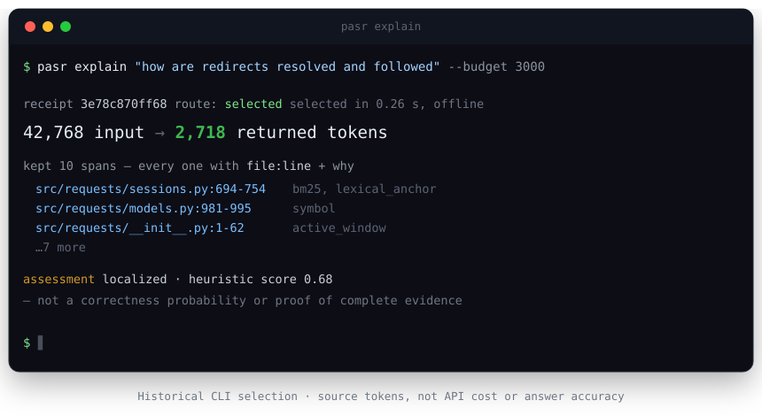
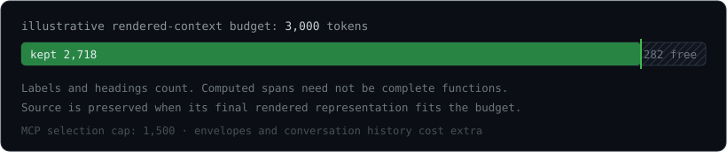
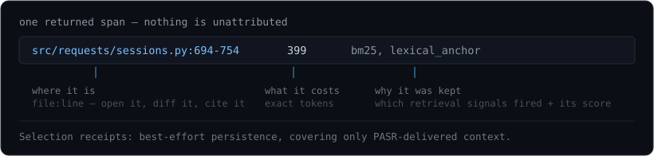
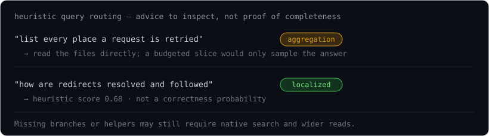
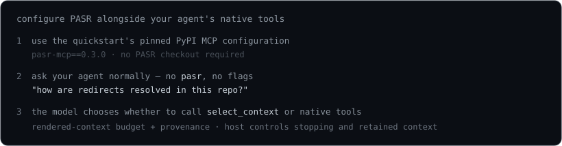

Historical CLI source-selection graphic, not a live agent run or an answer-quality comparison.
A real, maintainer-operated run on 2026-10-04 — not simulated terminal playback. Codex CLI 0.160.0 with GPT-6 Luna answered one source-loading question using an installed PASR 0.3.0 wheel.
The isolated workspace contained one byte-for-byte copy of
src/pasr/source_text.py,
named source_text.py. The prompt asked about BOM handling, newlines,
invalid UTF-8, NUL bytes, fingerprinting, and multi-file atomicity.
find_evidence — searched for source-loading behavior
(top_k: 12, per_file: 6).select_context — requested source_text.py with a
1,400-token budget; PASR returned 364 selected-context tokens.find_evidence — searched
SourceSnapshot multi-file snapshot read source files consistency transaction
(top_k: 10, per_file: 4).These calls were chosen by the model, not replayed by the demo script. The final turn reported 66,214 host input tokens (50,750 cached) and 417 output tokens. The 364 selected tokens are not the host's total input or API bill. Across all three completed historical turns, input usage was 184,984 tokens; the first two setup attempts reported no usage.
The following text is from the retained final answer, with its original workspace-relative citations:
BOM and decoding: Each file is read once and decoded as UTF-8 with an optional BOM; invalid UTF-8 raises
ValueError. NUL bytes also raiseValueError. (source_text.py:35-42)Newlines: CRLF and bare CR are both normalized to LF. Physical line splitting recognizes CR, LF, and CRLF. (source_text.py:11-18, 42-43)
Fingerprint: SHA-256 of the normalized decoded text encoded as UTF-8. (source_text.py:22-24, 42-44)
Atomicity: No. A
SourceSnapshotrepresents one file read and is explicitly “not a transaction across multiple files.” (source_text.py:27-29, 35-44)
The coding assistant checked these claims against the exact fixture; this was not an independent or blinded review. Earlier attempts included an unsupported config field, an inherited-stdin timeout, an MCP approval failure, and unsupported absolute citation prefixes. Those failures remain visible in the summary and all five attempts. Full stdout/stderr is retained in the maintainer's local ignored archive, not offered as a public download.
From a source checkout, use Python 3.10+, an existing Codex executable,
and a built PASR wheel. OPENAI_API_KEY must already be in your
environment, with access to gpt-6-luna. Dependency installation and
model access require network connectivity. This sends the public fixture
and prompt to OpenAI and incurs API costs. It is not an offline demo.
python scripts/demo_client.py --codex "/absolute/path/to/codex" --wheel "dist/0.3.0/pasr_mcp-0.3.0-py3-none-any.whl" --output "eval/agent_bench/results/client-demo" --timeout 90
Replace the executable and wheel paths; on Windows select the actual
codex.exe, not a .cmd wrapper. The output directory must
not exist. --model is optional (default gpt-6-luna);
compatibility with other models or CLI versions is not established.
Read the script.
The script installs the supplied wheel in a temporary venv, uses a temporary
CODEX_HOME and fixture workspace, explicitly closes stdin, and
preserves run.json, stdout.jsonl, and stderr.txt
even when the client attempt fails or times out. Setup failures are recorded in
run.json. Exact API-key matches are redacted before persistence;
inspect evidence before sharing it. Normal Codex settings are not changed.
Temporary files are removed after the attempt.
The checked-in driver was also run live: that repeat used two PASR calls and returned matching relative citations. Its separate repeat record preserves the result and host usage; the model need not repeat the same call sequence.
Scope and limits: only the isolated PASR server is preapproved. The native read-only sandbox does not sandbox MCP; PASR may write receipts/cache within its temporary workspace. Four calls is a prompt request, not an enforced server limit. The script fails on client/tool errors, missing completed answers, or absent PASR calls; it does not automatically judge source correctness. A new run can choose different calls or fail. This single prompted integration task establishes neither unprompted adoption, GUI compatibility, independent user retention, general answer quality, nor cost superiority.
Coding agents must locate relevant code without filling their context with unrelated source. Native grep and bounded reads already provide useful locations and can be logged. PASR adds selection and receipts; whether that helps the final answer must be measured, not assumed.
Live selection budgets its returned context, including labels and headings. JSON envelopes and conversation history cost extra. Computed spans are not necessarily complete functions; source that fits the final representation is preserved.

Source carries file:line provenance. Receipts record selection
reasons and scoring details; persistence is best-effort. They cover PASR-delivered
context, not a complete global agent audit or immutable source history.

Query classifications and keyword coverage are heuristics, not calibrated correctness probabilities. They cannot prove that the agent has every necessary branch, helper, or state transition.

No daemon or vector database is required. Offline use needs installed dependencies and cached tokenizer data; optional model weights are separate. The client can forward returned source to a cloud model. Default redaction is a no-op, not automatic secret detection.
0.3.0 is now on PyPI.
Install uv, make uvx available
on PATH, and use Python 3.10+ (or let uv provision it). No PASR checkout
is required. Replace the workspace path with the project's absolute path:
claude mcp add pasr -- uvx --from pasr-mcp==0.3.0 pasr-mcp --workspace /absolute/path/to/project
Alternatively, merge this into your client's MCP config. Update an existing
pasr entry rather than registering the same server twice:
{ "mcpServers": { "pasr": { "command": "uvx", "args": ["--from", "pasr-mcp==0.3.0", "pasr-mcp", "--workspace", "/absolute/path/to/project"] } } }
The separate GitHub release also provides versioned wheel/sdist artifacts. To install its wheel instead:
python -m pip install https://github.com/Apheironn/pasr/releases/download/v0.3.0/pasr_mcp-0.3.0-py3-none-any.whl
Then configure the installed pasr-mcp executable with
--workspace /absolute/path/to/project instead of the uvx launch.
Developers only — source checkout: replace pasr-mcp==0.3.0
after --from in the existing registration with
/absolute/path/to/pasr, not a second pasr entry.
This runs that checkout, which can differ from the release:
uvx --from /absolute/path/to/pasr pasr-mcp --workspace /absolute/path/to/project
These tools sit alongside the agent's native tools. The model chooses which to call; smaller selected context does not establish cheaper or more accurate answers. Dependency tracing and other optional tools require explicit exposure.

Without an agent:
run uvx --from pasr-mcp==0.3.0 pasr explain "<question>"
from the project to inspect to print a selection receipt.
One localized question — "how are redirects resolved and followed" — against
psf/requests:
| PASR historical selection | full supplied source | |
|---|---|---|
| source-context tokens | 2,718 — 94% less | 42,768 |
| tool round trips | 1 | 1 large read |
| provenance | file:line + reason, all 10 spans | depends on reader |
| heuristic diagnostic | localized · conf 0.68, not correctness probability | — |
| wall time | ~0.3 s, offline (no API, no index) | — |
This is a historical source-selection example, not the current MCP default cap or an agent-accuracy comparison. The pipeline audit found both missing evidence and wrong answers despite delivered evidence. No end-to-end win over native grep/read is established.
Native grep and bounded reads are useful defaults. PASR adds rendered-context budgets and selection receipts, not guaranteed better answers or lower API bills. Aider RepoMap provides structural navigation; Repomix packages source. These are overlapping workflows, not interchangeable products.
Latest source-reviewed studies (2026-10-03): the combined quality/cost gates failed. The experimental split reader used a host-enforced four-call limit and conservative stopping instructions, not the default installed workflow.
The exploratory matrix ran actual upstream Aider RepoMap and Repomix context generation under a shared answering harness, not the full Aider coding agent. Model-dependent results and wide uncertainty do not establish equivalent accuracy or universal superiority over native tools or competitors.
Default tools remain find_files, find_symbols,
find_evidence, find_usages, and select_context.
Opting into --tools search_code,read_code does not enforce the
experiments' four-call limit or stopping policy.
Confirmation record · Exploratory matrix · Methods and competitor caveats · Audit, sections 23–24
Earlier selector studies and offline localization proxies used different protocols; they are not current end-to-end product wins.
query + file globs → discover safe workspace files, tokenize, line-aligned chunks → lossless-under-budget check: does the whole thing already fit? return it → candidates: BM25 + lexical coverage + Python AST / JS/TS/Rust symbols + optional hashing / MiniLM scorer → fuse unique span ranks per signal → optional single-source prefix/tail (off in default MCP selection) → greedy whole-span packing, exact rendered-context cost, dependency order → classify the query, score confidence, write the receipt → return spans + provenance + token accounting + advice
RRF needs no score calibration across the rankers — only their rank orders — so BM25, symbol hits, and the semantic scorer combine without tuning weights.